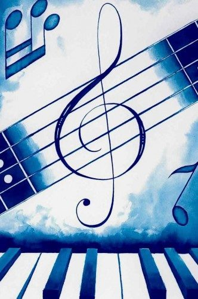
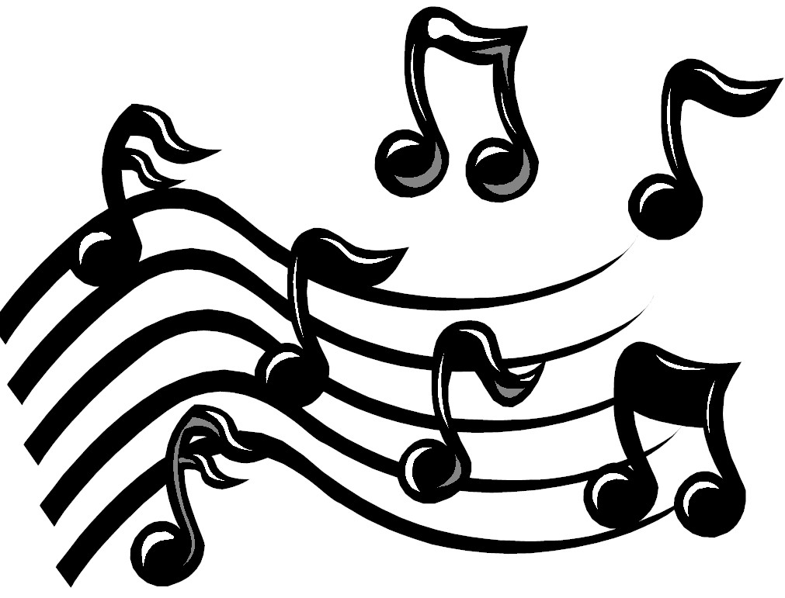

Piano
El piano (abreviación de «pianoforte», palabra que en italiano está compuesta por los términos «piano», «suave», y «forte», «fuerte») es un instrumento musical armónico clasificado como instrumento de cuerda percutida por el sistema de clasificación tradicional, y según la clasificación de Hornbostel-Sachs es un cordófono simple. El músico que toca el piano se llama pianista. El interprete del instrumento se denomina pianista.
Go somewhereGuitarra
La guitarra, también conocida como guitarra clásica o guitarra española, es un instrumento musical de la familia de los cordófonos, es decir los instrumentos que producen su sonido al hacer vibrar las cuerdas. Es un instrumento musical de cuerda pulsada, compuesto de una caja de resonancia, un mástil sobre el que va adosado el diapasón o trastero con un agujero acústico en el centro de la tapa y seis cuerdas.
Go somewhereFlauta
Se denomina flauta a un tipo de instrumento musical de viento. Por la sencillez de su construcción, puede que sea uno de los instrumentos más antiguos, pues con diversas formas se encuentra en todas las culturas. Consta de un tubo, casi siempre de madera o metal (hueso, marfil, cristal, porcelana, plásticos, etc.), con una serie de orificios y una boquilla, en el borde del cual (bisel) se produce el sonido. Al interprete se le denomina arpista. Al interprete se le denomina flautista.
Go somewhereSaxofón
El saxofón, también conocido como saxófono o simplemente saxo, es un instrumento musical cónico, de la familia de los instrumentos de viento-madera, generalmente hecho de latón que consta de una boquilla con una caña simple al igual que el clarinete. Fue inventado por Adolphe Sax a principios de los años 1840. El saxofón se asocia comúnmente con la música popular, la música de big band y el jazz, intérpretes del instrumentoson saxofonistas.
Go somewhereBateria
La batería es un conjunto de instrumentos de percusión usado por muchos grupos musicales, la batería eléctrica, también llamada pila o acumulador eléctrico, es un artefacto compuesto por celdas electroquímicas capaces de convertir la energía química en su interior en energía eléctrica. Así, las baterías generan corriente continua y, de esta manera, sirven para alimentar distintos circuitos eléctricos, dependiendo de su tamaño y potencia.
Go somewhereBongós
El bongó es un instrumento membranófono conformado por un juego de dos tambores pequeños hechos de madera ligeramente troncocónicos, uno más pequeño que el otro, unidos por una pieza de madera. Sus bocas superiores —las de diámetro mayor— están cubiertas por cuero sólido que se tensa con un anillo de metal de color negro a través de las llaves metálicas del bongó. Al iinterprete se le denomina bongosero.
le Go somewhereArpa
Es un instrumento de cuerda pulsada formado por un marco resonante y una serie variable de cuerdas tensadas entre la sección inferior y la superior. Este instrumento tiene sus orígenes en Egipto y Grecia, cuyas civilizaciones fueron las primeras en teorizar la armonización musical, y les permitió desarrollar las técnicas para construir instrumentos cordófonos. el sonido se da al tocar las cuerdas.
Go somewhereViolín
El violín (del italiano violino, diminutivo de viola) es un instrumento de cuerda. Quién lo toca recibe el nombre de violinista. De la familia de las cuerdas frotadas, es el más pequeño y agudo entre los de su clase, que se compone de una caja de resonancia en forma de 8, un mástil sin trastes y cuatro cuerdas que se hacen sonar con un arco. También pueden haber violines de metal que son como uno de madera pero el de metal no tiene un fondo.
Go somewhereCaracteristicas de la Música
 Las Enseñanzas Musicales tienen como finalidad cualificar a los futuros profesionales de la Música, por medio de una enseñanza integradora, que, junto a la formación profesional de carácter artístico, dirigida a la consecución de competencias técnico-musicales específicas, contemple la formación humanística y la educación cívica. Se pretende conseguir que la formación del alumnado alcance no solo al conocimiento del instrumento de la especialidad y al desarrollo de las habilidades propias de la ejecución instrumental, sino también se extienda a la aprehensión del hecho musical como creación y acción humanas, cuya comprensión requiere del concurso de diversas perspectivas: histórica, cultural y social
Las Enseñanzas Musicales tienen como finalidad cualificar a los futuros profesionales de la Música, por medio de una enseñanza integradora, que, junto a la formación profesional de carácter artístico, dirigida a la consecución de competencias técnico-musicales específicas, contemple la formación humanística y la educación cívica. Se pretende conseguir que la formación del alumnado alcance no solo al conocimiento del instrumento de la especialidad y al desarrollo de las habilidades propias de la ejecución instrumental, sino también se extienda a la aprehensión del hecho musical como creación y acción humanas, cuya comprensión requiere del concurso de diversas perspectivas: histórica, cultural y social
Estas enseñanzas proporcionan una formación que garantiza el nivel de expresión artística propio de unos estudios especializados que se orientan al ejercicio profesional, razón por la que están dirigidas a aquellos alumnos y alumnas que posean aptitudes musicales específicas y una clara motivación para dedicarse a ellas.
La música puede definirse a muy grandes rasgos como una sonoridad organizada, coherente, significativa. Se caracteriza por el empleo de los sonidos (y de los instrumentos para producirlos) con el objetivo de producir una secuencia estéticamente apreciable y significativa.Como todo sonido, se propaga por el aire (o el medio en el que se inserte) y por lo tanto sus propiedades dependerán de las condiciones en que se ejecute un instrumento.Posee un ejecutor o intérprete, que es quien emplea el instrumento musical, pero también un compositor, que es quien concibió el lenguaje rítmico y sonoro que será luego interpretado en escena. Ambas personas bien pueden ser la misma.
Parametros
Los parámetros del sonido pueden clasificarse sólo en función de cuatro parámetros fundamentales que son los siguientes: la altura (aguda o grave), intensidad (fuerte o débil), duración (larga o corta) y timbre (qué o quién emite el sonido). No existe algún otro que pueda ser analizado, de hecho, tanto los músicos como los físicos están de acuerdo en eso.
Es el resultado de la frecuencia producida por un cuerpo de sonido; es decir, el número de ciclos de vibraciones por segundo o hertz (Hz) que se emiten. En consecuencia, los sonidos se pueden definir como «bajo» y «alto». Cuanto más alta sea la frecuencia, más nítido (o más alto) será el sonido. La longitud de onda es la distancia medida en la dirección de propagación de la onda, entre dos puntos cuyo estado de movimiento es idéntico; es decir, alcanzan su máximo y mínimo al mismo tiempo.
Corresponde a la duración de las vibraciones que producen un sonido. La duración del sonido está relacionada con el ritmo. Ésta se representa en la onda por los segundos que contiene.
Corresponde a la duración de las vibraciones que producen un sonido. La duración del sonido está relacionada con el ritmo. Ésta se representa en la onda por los segundos que contiene.
Es la fuerza con la que se produce un sonido, dependiendo de la energía. La intensidad se desarrolla mediante una onda por la amplitud.
Es la calidad que distingue los diferentes instrumentos o voces, aunque producen sonidos con la misma altura, duración e intensidad. Los sonidos que se escuchan regularmente son complejos, ya que forman parte de un conjunto de sonidos simultáneos como sobretonos, tonos y armónicos. Pero que se pueden percibir como uno (sonido fundamental).
El timbre depende de la cantidad de armónicos o la forma de la onda que tiene un sonido y la intensidad de cada uno de ellos, lo que se denomina espectro. El timbre está representado en una onda por el dibujo. Un sonido puro, como la frecuencia fundamental o cada sobretono, está representado por una onda sinusoidal, mientras que un sonido complejo es la suma de las ondas sinusoidales puras.
El espectro es una sucesión de barras verticales distribuidas a lo largo de un eje de frecuencia y que representan cada una de las ondas sinusoidales correspondientes a cada sobretono, y su altura indica la cantidad que cada una contribuye al sonido resultante.
Elementos de la Música
La música cuenta con cuatro elementos esenciales que son: el ritmo, la melodía, la armonía y los matices, aunque para algunos este último no es tenido en cuenta como tal. Otras propuestas adicionan el timbre como un elemento más aparte de ser una cualidad del sonido. La forma en que se definen estos elementos varía de una cultura a otra y también hay variaciones temporales, por ello presentaremos varias posibles definiciones de cada uno de ellos. Tiene tres componentes o elementos básicos que son la melodía, armonía y ritmo.
Es lo más fácil de recordar, la esencia de la canción y lo que la hace reconocible. Las estructuras melódicas que tienen una entidad por sí mismas se llaman frases, por analogía con las frases lingüísticas. En la música contemporánea, las frases se pueden clasificar como riffs (repetitivo) o solos (no repetitivo).
La melodía tiene un componente cultural muy fuerte, acá se adhieren las estructuras melódicas occidentales. Esta, tiene una dimensión fundamentalmente horizontal con progresivos sucesos en el tiempo, combinando ritmo y tono.
Si la melodía tenía un componente horizontal, la armonía es eminentemente vertical. Ésta cumple la función de acompañamiento, marco y base de las melodías. Hablar de armonía es hablar de acordes y sus cadencias. Un acorde es un conjunto de 3 o más notas que se tocan o se perciben simultáneamente. La nota más seria del acorde recibe el nombre de nota fundamental y es lo que le da el nombre al acorde. El orden de la nota fundamental en su escala correspondiente nos da el grado del acorde y, por lo tanto, su función.
Este elemento es el que vincula a la música con el tiempo, permitiéndole transmitir cierta emoción dependiendo de la vertiginosidad, placidez o las formas con que los anteriores elementos se manifiesten. Estrictamente hablando, el ritmo no es más que los patrones existentes en la sucesión de los sonidos, la combinación específica de figuras y silencios que compone la música.
Notas Músicales
Las notas musicales representan un concepto utilizado para expresar la altura o el tono de un sonido. Las notas son nombres para ciertas frecuencias que permiten decir, que un sonido corresponde a cierta nota, es una combinación de varias notas, está entre dos notas. Por lo tanto, una nota se puede denotar según la convención musical o por la expresión de su frecuencia, por ejemplo, 4 es igual a 440 hertz, o vibraciones por segundo en la sintonización estándar, o 444 hertz en la sintonización de la cámara.
Generalmente se llama incorrectamente «nota» a los signos que expresan la duración del sonido, cuando en realidad estas son las cifras. Los nombres de las notas musicales provienen del canto gregoriano a San Juan Bautista, popular en la Edad Media.
Las figuras musicales son los símbolos que asignan a las notas musicales su duración, que se mide en tiempos. Estas figuras nos dicen la cantidad de veces que la nota que representa dura. Sin embargo, las figuras no tienen un valor de tiempo definido; el valor es asignado por el cifrado de la brújula. Las figuras de las notas en la música son las siguientes: blanca, negra, redonda, corchea y semicorchea, triplecorchea y tetracorchea.
La unidad fundamental del ritmo es la brújula. Las medidas se nombran como fracciones, por lo que el numerador indica el número de divisiones que tiene cada medida y el denominador indica la duración de esas divisiones. En el ritmo de 3/4 (leído tres veces cuatro), típico del vals, cada medida estaría compuesta de 3 negros.
La medida 9/8 que se usa en música clásica y jazz tendría 9 octavos para cada medida. Existen estructuras rítmicas más complejas, utilizadas en géneros como el jazz o el flamenco, formados por compases de amalgama donde se combinan varios tipos de compases en el mismo ritmo. En principio nos centraremos en el compás 4/4 (también llamado de compasillo), por ser el más habitual. Este compás está dividido en cuatro partes o tiempos: Fuerte-Débil-SemiFuerte-Débil. Cada uno de esos tiempos tiene la duración de 1/
Personalmente considero que la notación anglosajona es más intuitiva, tanto para figuras como para acordes, aunque culturalmente esté más habituado a la notación latina. En principio daré preferencia a la anglosajona, pero es recomendable conocer ambas.

Los primeros testimonios confiables del hecho musical no nos llegan hasta el Paleolítico inferior, cuando el ser homínido aprendió a crear utensilios de piedra, hueso y asta, con los que logra sonoridades, ya sea por insuflación en el borde biselado de un hueso, o haciendo clic ese mismo material, o frotándose como ocurre con los rascadores dentados.
Asimismo, se procedió a la fabricación de sonajeros, elaborados con calaveras o frutos secos en los que se introdujeron semillas, a menudo dotadas de carácter simbólico, casi siempre funerarias. Y es que estos instrumentos de percusión o de choque están asociados con un hecho muy importante que ha ayudado a articular el lenguaje: el ritmo. La duración de los sonidos, o la repetición de ellos, a menudo como una imitación del ritmo o el latido del corazón, expresa la concepción de aquellos hombres, que entendieron la existencia de una manera circular y cíclica, de la misma manera que estaba. El florecimiento de los árboles o la sucesión de días y noches.
El arco musical forma parte del conjunto de elementos característicos de los Pirineos (Francia); también es curioso observar que el arco musical y la danza aparecen cronológicamente en la misma etapa de la cultura. Si bien no existe una fecha exacta de la creación del primer instrumento musical, los hallazgos arqueológicos sugieren que hubo música desde la época primitiva y que fueron los instrumentos de percusión y de viento los primeros en aparecer.
Probablemente fue la voz el origen de la expresión musical del hombre a través de los cantos junto con el acompañamiento de manos y pies siguiendo un ritmo, como un cuerno para señalar el éxito en la caza, o un tambor en una ceremonia religiosa. Sabemos que el tambor más antiguo conocido data de 30.000 años cuando el hombre utilizaba la piel estirada de animales para crear sonido.
De yacimientos arqueológicos se han encontrado flautas, silbatos, bramaderas y tubos de caña de bambú hechos en huesos cortos que producían sonido al soplar por ellos. El hallazgo en la cueva de Hohle Fels, Alemania, de una flauta tallada en huesos de buitre con más de 35.000 años, podría ser del instrumento musical más antiguo creado por el hombre. También demuestra la presencia en Europa de humanos sociables y creativos, que precedieron a los neandertales.
En la música, la composición es el arte que tiene como un objeto la creación de una obra. El término también se aplica al resultado de ese proceso. Leo Treitler describe cómo a la música, al concepto de “obra” donde la notación musical opera como soporte excluyente. Dentro de esta mirada pareciera ser que lo que no está escrito en partitura no se puede estudiar y que la posibilidad de recreación de las músicas pertenecientes a un ámbito de producción, circulación y recepción popular-oral queda supeditada a las posibilidades que ofrece este modelo.
Este concepto clásico romántico de la música constituye que el medio de transmisión por excelencia asociado a las obras musicales es el papel. Hay una versión original, la cual promueve la fantasía de estar más cerca de la voluntad del compositor, de la “verdad” en términos de intención y significado de la obra. Así, lo escrito se erige como reflejo exacto de la idea del autor y se confunde, por lo tanto, con la obra en sí. De esta forma, partitura pasa a ser sinónimo de obra. La obra musical otorgó a la música una forma permanente; dejó de pensarse en la música como algo puramente evanescente, una actividad o experiencia que se desvanece en el pasado tan pronto como concluye. Porque mientras tienen lugar en el tiempo las interpretaciones de obras musicales, la obra como tal perdura. De este modo, la música se convierte en algo que podemos almacenar o acumular, una forma de lo que podría denominarse capital estético.
Sin embargo, hoy en día puede encontrarse una notable cantidad de registros discográficos que contienen interpretaciones de dichas producciones musicales, con diferentes criterios de abordaje, según la pretensión en la reconstrucción histórica. Después de todo, las producciones de la tradición escrita, frecuentemente asociadas con los compositores, las obras y la complejidad siguen dependiendo fuertemente de la transmisión oral y en un conjunto de intuiciones interpretativas que mayoritariamente no está escrito. Por el contrario, el hecho de que una composición no exista en partitura, pero esté viva en la mente de los ejecutantes no la descalifica como “obra” ni le quita complejidad.
Dicho esto, debemos considerar que los historiadores de la cultura oral enfrentan verdaderas dificultades, ya que existe muy poca evidencia de primera mano, sobre todo de épocas anteriores a la invención del fonógrafo. Esto produce un efecto en el cual las primeras grabaciones de música antigua se toman como documentos que representan un estado originario de ese repertorio, en lugar de una etapa particular en su evolución.
La creación musical es una labor muy complicada, pues implica el control de todos los elementos que participan en la música: el sonido en todos sus caracteres, la armonía, el ritmo, la estructuración formal, la tímbrica u orquestación... A pesar de todo cualquiera puede inventarse una melodía, tararear con ritmo, dominar alguno de los elementos antes citados, pero no controlar otros. Por eso, dentro de la creación musical encontramos diversos términos y funciones alrededor de la composición. Las siguientes entradas simplifican la cuestión, aproximándose al uso general que reciben estas palabras. No queremos entrar en cuestiones de calidad; se puede ser un magnífico artista en uno solo de los aspectos que tratamos, sin que sea descalificacado por no dominar otros.

© 2021 Wordmusic.com |Todos los derechos reservados